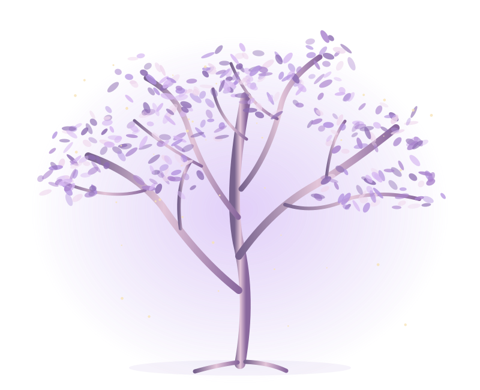

有人说，薰衣草代表等待与守候。
FOR 你们
在漫长的时间里，
有些相遇，像花期一样值得等待。
而有些人，一旦遇见，便让整个宇宙都有了方向。
点击开启 · 建议戴上耳机静静看完
CHAPTER I · A LETTER
有些祝福，打在屏幕上好像太轻。
所以，我们还是想把祝福尽量具体化，
用某种载体，把这份心意留下来。
点击信封
A letter from us
08 · 11 · 2026给 你们：
听说11月8号是个好日子～ 💍✨
11，是两个人并肩站在一起；
8，是两个圆满的圈，紧紧相连。
原来最好的日子，不是因为黄历说它好，而是因为你们选择在这一天，从此把彼此写进了一辈子。 ❤️
祝你们新婚快乐，幸福无限！♾️
诶！而且这一天刚好是 Sunday！☀️
星期日，也是属于你们的 Sun Day 🌻
愿从今天起，你们成为彼此生命里的小太阳，照亮往后的每一个平凡日子。☀️
因为有彼此，所以每一天都是好日子。 ❤️
期待见到最帅的新郎和最美的新娘！🤵🏻👰🏻♀️✨
P.S. 这个网站虽然只有一周的期限，但我们的祝福和心意可是无限期的哟～ ♾️💌
CHAPTER II · A GIFT
有些礼物，不需要装进盒子里。
把祝福种成一棵树，
树是假的，心意是真的。
至于枝头藏了什么，就等你们亲自揭晓啦。 🌳💌
点击打开礼物盒
A LITTLE TREE OF WISHES
一树祝福，慢慢拆开。
点击小包，解开谜题，收下祝福 · 顺序由你决定

点点我们 ♡
已打开 0 / 5 份祝福
A LITTLE SURPRISE
恭喜你解锁神秘小礼物
8
抬头看看，礼物正在来的路上……
惊喜吗？
没有惊喜就是最大的惊喜。
可也许，等待真正珍贵的地方，
并不是等了多久。
而是在如此辽阔的世界里，
最后等到了彼此。
亿万颗星辰，各自沿着自己的轨迹运行。
而在人海之中，
两个人也曾拥有完全不同的人生轨迹。
直到某一天，
两条轨迹相遇了。
从那一天开始，
世界没有变小。
只是这个巨大的宇宙里，
多了一个可以一起回去的地方。
CHAPTER III · OUR UNIVERSE
婚姻不是故事的结局。
是两个独立的宇宙，决定从今天开始，共同书写时间。
TO YOUR NEW BEGINNING
愿你们的爱情，
像薰衣草一样温柔而长久，
也像星辰一样，
在漫长的时间里，始终照亮彼此。
你们
2026 · Wedding Day
新婚快乐。
属于你们的宇宙，才刚刚开始。